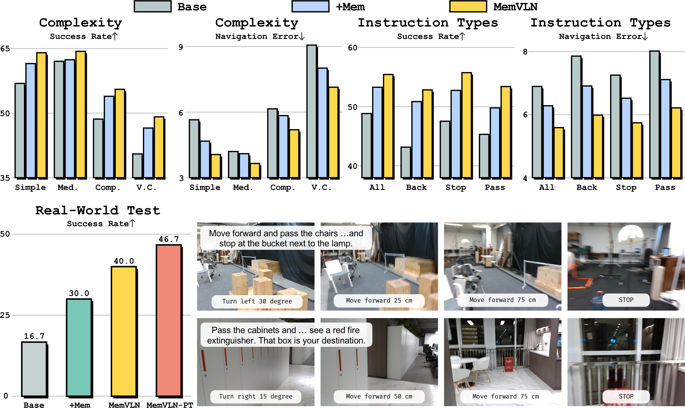
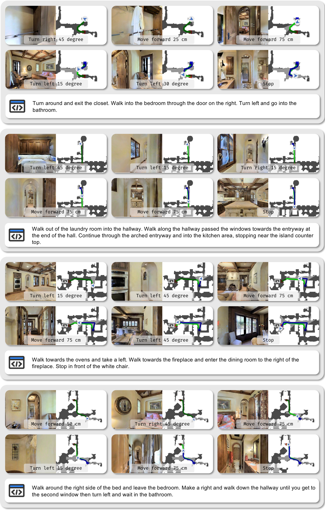
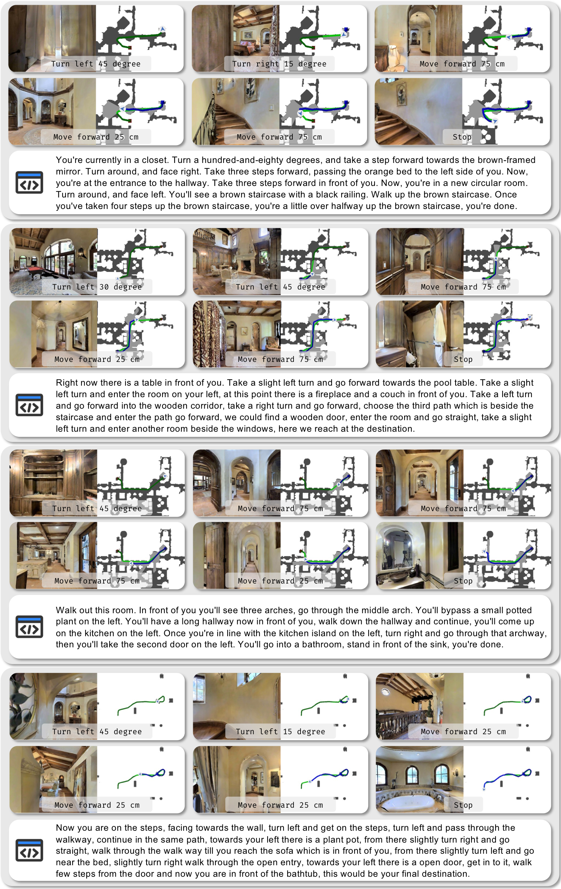

Streaming episodic memory
A memory bank accumulates visual features, timestep, and odometry through the whole episode, then consolidates similar consecutive frames when capacity is reached.
Streaming Episodic Memory for Vision-Language Navigation
Vision-language navigation asks an embodied agent to follow language instructions through 3D environments. Recent VLM-based agents operate on monocular streaming video, but their long-horizon reasoning is bottlenecked by the absence of persistent episodic memory. MemVLN addresses this gap with a memory bank that stores compressed perceptual features together with spatio-temporal context, and a memory perceiver that retrieves fixed-size memory tokens for action prediction.
A memory bank accumulates visual features, timestep, and odometry through the whole episode, then consolidates similar consecutive frames when capacity is reached.
A memory perceiver retrieves 300 compact memory tokens through cross-attention, letting the VLM reason over history without reprocessing raw long videos.
StreamVGGT features are adapted into the VLM feature space, enriching local spatial understanding while preserving a streaming inference interface.
Masked trajectory summarization and sub-trajectory decomposition force the model to reconstruct route semantics from memory alone.
MemVLN combines Qwen3-VL-4B with its native vision encoder, a frozen StreamVGGT geometry encoder, and a plug-in memory module. At each step, the LLM receives memory tokens, recent local visual context, the current observation, and the language instruction, then autoregressively predicts the next navigation action.

Append each observation feature with timestep and odometry into the episode memory bank.
Merge similar consecutive frames and downsample patch features with ToMe for bounded cost.
Use spatially and temporally grounded queries to retrieve fixed-size memory tokens.
Condition the VLM on memory, local context, current view, and instruction for action prediction.
MemVLN is trained on the official R2R and RxR training splits only. On VLN-CE Val-Unseen, it achieves strong controlled-comparison performance on both datasets and shows its largest gains on longer, more complex RxR trajectories.
R2R Val-Unseen
55.0 SR, with 50.5 SPL and 61.2 OSRRxR Val-Unseen
55.4 SR, with 48.4 SPL and 64.6 nDTWReal-world G1
46.7 SR after post-training with 24 demonstrations| Dataset | NE ↓ | OS/SR ↑ | SPL ↑ | nDTW ↑ | External data |
|---|---|---|---|---|---|
| R2R | 5.19 | 61.2 OS / 55.0 SR | 50.5 | — | 0K |
| RxR | 5.59 | 55.4 SR | 48.4 | 64.6 | 0K |
| Method | Runs | Successes | SR ↑ | CR ↓ |
|---|---|---|---|---|
| Base | 30 | 5 | 16.7 | 56.7 |
| +Mem | 30 | 9 | 30.0 | 66.7 |
| MemVLN | 30 | 12 | 40.0 | 46.7 |
| MemVLN-PT | 30 | 14 | 46.7 | 46.7 |

The demos below use the supplementary videos: R2R and RxR qualitative rollouts, plus paired first-person and third-person views from real-world G1 navigation.


@misc{wang2026memvln,
title = {MemVLN: Streaming Episodic Memory for Vision-Language Navigation},
author = {Wang, Yan and Huang, Jiangyong and Huang, Siyuan and Jia, Baoxiong},
year = {2026},
eprint = {2610.35066},
archivePrefix = {arXiv},
primaryClass = {cs.CV},
url = {https://arxiv.org/abs/2610.35066}
}